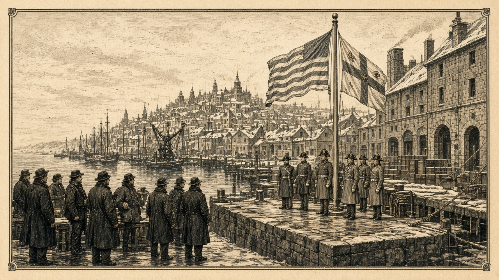

シンジケート連邦が同盟軍入り 翠湖と青海が開戦
第115〜139期に交戦した旧敵が同盟軍へ 翠湖戦線が開く スルガは連邦軍へ

【総合部】第190期、シンジケート連邦が同盟軍に加わった。同盟軍の構成は青海共和国、なのです主義人民共和国、黒潮自治国、シンジケート連邦の四か国となった。盟主は引き続き青海共和国が務める。シンジケート連邦は、なのです主義人民共和国と第115期から第139期まで戦った旧敵国だ。停戦から51期を経て、両国は同じ陣営に入った。連邦の人口は二万八千三百人、兵力二万四千九百人、首都はプライム（16,74）。同盟軍全体は四か国、人口百七十六万六千六百人、兵力九十一万二千四百人、領土四百二十三区画となった。詳報は2面。
同じ期、予告どおり翠湖自治州と青海共和国が開戦した。翠湖はさらにカペレナ王国へ宣戦し、開戦は第195期。国特集は8面の翠湖自治州。
チェスからあろあろへ十一万五千四百人
チェス＝シロバキア共和国島からあろあろ国島へ十一万五千四百人が移住した。あろあろの人口は六十四万二千人。橙原では町（47,55）と平地（46,54）を占領し、藍岬共和国連邦の町（83,20）も、なのです主義人民共和国の占領下に入った。詳報は2面・3面。